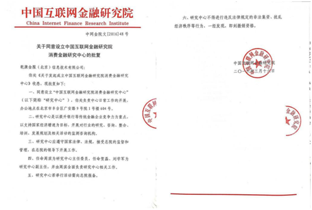

乾康金服
C
ardPay service

中国互联网金融研究院消费金融研究中心成立

乾康金服（北京）信息技术有限公司介绍

消费金融简介

互联网消费金融管理师
中国互联网金融研究院消费金融研究中心成立
S
et up
Consumer Finance Research Center
消费金融研究中心简介
中国互联网金融研究院消费金融研究中心是以提升银行等传统金融企业竞争力为重点，以支持国家经济增速为目标，开展对行业的研究、咨询、整合、培训、发展规划及相关活动的监测咨询机构。隶属中国互联网金融研究院。Consumer Finance Research Center Build
消费金融研究中心成立
2015年1月，由中国电子商务协会主办的2015中国互联网金融高峰论坛暨中国互联网研究院授牌仪式在北京国家会议中心隆重举行，中国互联网金融研究院消费金融研究中心在此背景下应运而生。中国互联网金融研究院消费金融研究中心坚守金融业诚信、审慎、稳健、盈利的经营本质，为推进中国居民能够受惠于普惠金融而培养相应的优秀人才做出应有的贡献。2016年3月16日，中国互联网金融研究院消费金融研究中心批复成立，任命周滨为研究中心主任委员，任命贺磊、刘学军为研究中心副主任，并由周滨全面负责研究中心相关工作。
批文授权
A
pproval authorization
1、研究中心批文 2、研究中心授牌

开展职业技能培训
V
ocational skills training
随着互联网金融行业迅速发展，行业规模不断增长，整个行业对人才的需求愈加强烈，但目前从业人员良莠不齐，一定程度上影响了市场环境。
为全面提升行业从业人员整体素质，规范行业市场环境，推动行业健康可持续发展，应党中央及国务院号召，中国互联网金融研究院消费金融研究中心（以下简称“中心”）批复成立，以规范消费金融业务的操作标准为宗旨，协助银行进入消费金融蓝海行业，培养消费金融人才，应党中央及国务院号召，中心设立并开展“互联网消费金融管理师”职业技能培训认证项目。


公司简介
J
ava engineer
Company Profile
乾康金服（北京）信息技术有限公司
乾康金服（北京）信息技术有限公司（以下简称“亁康金服”）成立于2016年1月18日，由乾康（上海）金融信息服务有限公司（以下简称“乾康集团”）投资控股，是互联网银行和消费金融领域，专注于技术、风控平台的金融服务机构。乾康集团是专注于金融领域专业管理咨询以及运营实施的服务机构，公司的主营业务是为银行等金融机构提供微小贷款和信用卡业务的咨询及运营、人力资源管理、新产品创新等咨询服务以及协助实现银行互联网金融平台建设----金融 OTO 商业模式服务平台。
乾康集团发展历程
D
evelopment path
乾康金服基于消费金融、供应链金融、小微贷款等银行授信业务，研究开发风险控制平台，为银行提供借款人风险评估和审核、标准产品设计服务，为个人客户提供信用评估服务。除平台业务外，2016年3月16日，中国互联网金融研究院批准乾康金服成立“中国互联网金融研究院消费金融研究中心”，以规范消费金融业务的操作标准为宗旨，协助银行进入消费金融蓝海行业，培养消费金融人才，设立“消费金融管理师”职业培训项目。
乾康金服成立伊始就将零售金融作为业务发展重点，在早期的小微贷和信用卡业务中，消费类金融业务占据重要比重，积累了相当丰富的市场营销、业务运营和风控反欺诈能力。
由于金额更小，审批更快，期限更短的消费金融业务对从业者提出了更加严格甚至苛刻的要求和门槛，乾康金服早在2013年就开始业务布局，积聚相关专业人才，研发相关核心技术，如渠道获客技术、风控与反欺诈技术等等。
乾康金服目前已经拥有近五十人的消费金融专业团队，其中有来自国内外一线商业银行、消费金融公司的核心骨干，也有在相关专业咨询服务公司持续从业消费金融十几年的资深顾问。
我们的消费金融技术团队已经研发成功一系列消费金融系统产品，包括渠道端系统、营销类系统、审批及风控类系统、支付清算平台、资产催收及呼叫中心等等，这些软件产品已经在金融机构获得广泛应用与验证。
乾康集团有全国50余家城商行、农商行资源等；有超过5年的银行贷款风险控制经验，为20余家银行提供了小微贷款和信用卡业务的咨询运营服务，教授银行小微客户的识别方法和风控方法，形成了一套自己的客户识别系统和授信评估模型；乾康金服风险控制团队均有丰富的贷款、信用卡、消费金融风控经验。银行通过乾康金服供应链融资平台，可以将贷款的风险控制前置，并解约运营成本和相应的人力成本，成本的下降能够带来更大的利润空间，因此银行非常乐于与乾康金服合作。


业务介绍
B
usiness
1.互联网银行咨询
亁康金服根据自身技术和业务优势，组织团队，向银行提供互联网银行开办、运营咨询服务，目前已与江南银行签约执行咨询服务。
2.消费金融业务咨询
亁康金服向银行提供消费金融业务咨询，咨询内容包括消费金融业务梳理、业务规范制度建设、应用场景设计、人员招聘培训、消费金融系统开发、业务运营等。
3.消费金融管理师培训
面向社会、金融机构、消费金融公司及平台等消费金融从业人员，提供《消费金融管理师》培训，目前开设有高级研讨班和中级管理师培训班，计划在6月开立网络培训班。
《消费金融管理师》第一期培训班于4月9日－4月13日在北京开设，第二期培训班与5月底在岑溪农商行开设。
4.风控平台业务
亁康金服将自己的渠道资产资源和银行资金资源进行整合，通过风控平台将资金和资产进行撮合，提供风险控制服务。目前涉及业务为消费金融、小微贷款、供应链金融等。消费金融业务逻辑如下：


5.创立消费金融联盟
亁康金服利用自身资源优势，作为中国互联网金融研究院消费金融中心的承办单位，正积极筹备创立消费金融联盟，为消费金融公司、金融机构等提供业务交流探讨、消费金融市场研究分析等服务。
乾康专家团队
E
xpert team
 周滨
周滨
曾任
神州数码有限公司 事业部总经理
亚银（上海）信息技术有限公司 总经理
现任
乾康（上海）金融信息服务有限公司 总裁
中国互联网金融研究院消费金融研究中心 主任委员
专业特长
熟悉银行业务，组织实施了多家银行核心系统的开发建设。代表神州数码管理过大型ATM机具生产合资企业；结合国外ATM先进的运营经验，率先在国内开展银行自助设备外包运营，通过建立科学的银行网点选址模型，在长三角地区为数十家银行提供网点建设及运营服务，并取得行业内单台/平均自助设备中间收入收益最高的骄人业绩。
通过对银行现有信用卡及小微贷业务的探索，借鉴国内外成熟技术，组织开发了《四维客户甄别法》、《授信评估系统》、《客户经理管理系统》等多种工具，成功地为数十家银行开展了信用卡、小微贷、消费金融、供应链融资等业务的咨询、培训及运营实施等服务。
 檀晓阳(金融学硕士)
檀晓阳(金融学硕士)
曾任
鄞州银行信用卡中心总经理
银联数据业务总监
天津银行银行卡首席顾问
安徽农信银行卡首席顾问
现任
乾康（上海）金融信息服务有限公司 副总裁
专业特长
工行首批信用卡业务管理人员。曾负责对200余家区域性银行业务辅导工作，设计和构建多家商业银行银行卡业务管理机构，有效推动业务高速发展，使得信用卡业务成为银行新的创利中心。为商业银行打造新型的信用卡业务发展管理、运营实施理念与核心体系，形成适合区域性商业银行发展战略指导思路。接受指导的多家银行成为银行部门收益“亿元俱乐部”成员。辅导的金融机构包括:民生、浦发等全国股份制商业银行，天津银行、上海农商行、河北银行、安徽农信、浙江农信、江南银行、泰安银行、常熟农商行等区域性商业银行。 作为小微企业贷款业务的先期探索者，对适合中国特色的小微金融、消费金融的运营和风险防控体系及实施技术有深入研究。
 宋力
宋力
曾任
中兴创新金融总架构师
农行项目经理
IBM中国核心银行及创新金融解决方案负责人
文思创新助理副总裁
金融行业产品研发负责人、总架构师
中兴通讯金融事业部技术负责人兼互联网金融产品总架构师
现任
乾康金服首席技术顾问
专业特长
多家银行业务骨干、技术骨干，曾参与实施人总行架构设计与咨询、银监会信息规划编制、农业银行架构设计与咨询、建设银行架构设计与咨询。拥有二十多年丰富的金融行业产品管理、技术管理经验和成熟的系统架构规划能力，精通消费金融业务和实现技术。近三年先后在两家企业成功组建并运作互联网金融产品团队、技术团队，带领团队规划建设互联网金融技术体系和运营体系。
 马颖涵(注册会计师)
马颖涵(注册会计师)
曾任
中国银行陕西省分行科技部
信用卡中心
计划财务部主管
现任
乾康（上海）金融信息服务有限公司 副总裁
专业特长
金融行业复合型人才，具有丰富的科技、金融财会从业经验，具有信用卡业务规划和管理运作能力，成功为国内知名商业银行提供信用卡业务综合风险咨询、信用卡系统建设咨询、信用卡业务管理和规划实施咨询及信用卡业务运营。成功搭建乾康金融《个人金融业务综合系统》、《授信评估模型》、《远程授信评估平台》。
 庞中(高级咨询师)
庞中(高级咨询师)
曾任
国内某A股上市金融机具企业上海分公司总经理
国内知名金融类自媒体金融志（行业志）创始人
国内某前沿金融O2O平台创始人
现任
乾康（上海）金融信息服务有限公司助理总裁
专业特长
曾长期服务于农业银行，中国银行，邮储银行，中信银行，广发银行，浦发银行，上海农商行等银行的线上线下金融服务与产品及社区银行营销的O2O业务。也是中国广发银行月光宝盒产品国内独家第三方合作推广平台，2015年为广发银行月光宝盒项目带来新增开户100万户。第一家协助银行打造金融产品病毒式传播营销的平台。
拥有丰富的互联网金融营销及运作经验。对于银行的金融产品与服务在手机端、PC端及线下各行业渠道的推广及落地，拥有非常丰富的管理及运作经验。
 李丽(中级经济师)
李丽(中级经济师)
曾任
开联信息技术有限公司金融事业部 总经理助理
兴化农村商业银行微贷咨询项目 项目经理
阜宁农村商业银行银行微贷咨询项目 项目总监
江阴农村商业银行微贷咨询项目 项目总监
东台农村商业银行微贷咨询项目 项目总监
现任
乾康（上海）金融信息服务有限公司 总裁助理
专业特长
拥有丰富的小微贷款行业的项目咨询经验，丰富的供应链金融行业务经验。
国家开发银行1+N模式供应链融资保理业务团队核心成员，设计1+N保理业务模型、操作手册、合作流程、系统需求等，一手推进了合作项目的开展。
 杨光(工商管理硕士)
杨光(工商管理硕士)
曾任
广东发展银行项目经理
交通银行太平洋信用卡中心推广经理
现任
乾康（上海）金融信息服务有限公司 项目实施部 副总经理
专业特长
拥有10余年金融行业从业经验，极强的的团队管理能力，主要从事中小银行信用卡中心咨询运营的全体系搭建工作，涵盖战略规划、产品设计、运营管理、风险管控等方面的内容。
负责过的项目有：福建厦门农商行信用卡咨询运营项目、江苏江南农商行信用卡咨询运营项目、江苏无锡农商行信用卡咨询项目、广西岑溪农商行信用卡咨询运营项目、福建泉州银行微贷咨询运营项目以及江苏江阴农商行微贷咨询运营项目。
 周黎迪
周黎迪
曾任
浙江大学金融研究院顾问
桂林银行小微金融事业部副总经理
长江银行小微金融事业部总经理
大连银行成都分行首席风控官
北京华诚拓信金融信息咨询有限公司风控总监兼首席风控官
现任
乾康（上海）金融信息服务有限公司 风控总监
专业特长
拥有多年金融行业管理和风控经验，擅长风险控制、风控模型设计、产品设计和研发，小微金融和消费金融方面的专家，审批小微贷款近30000笔，所主管的网点至今追踪不良率低于0.22%（未做任何重组、核销和掩盖情况下的真实不良率）。擅长人才培养、培训和管理，之前所带领的团队人员都成为了各银行的骨干，40%以上的下属已经走上了银行的各级管理岗位。
 王红梅(消费金融管理师)
王红梅(消费金融管理师)
曾任
包商银行小微业务部 执行经理
包商银行小微业务部 培训师
信和汇金金融信息咨询管理有限公司 业务经理
现任
乾康（上海）金融信息服务有限公司 项目经理
专业特长
从事小微信贷10多年，拥有过硬的风控技术，丰富的审贷经验。组织管理过多次银行小微业务的培训及授课工作，管理过70人的团队超额完成任务，管理、领导、沟通能力强。曾多次担任信贷产品设计及业务全流程化管理的项目工作，项目经验丰富。
 卿月秀
卿月秀
现任
乾康金服（北京）信息技术有限公司 渠道经理
专业特长
曾参与开联公司与国家开发银行战略合作的供应链融资保理业务的营销、培训以及系统指导工作，协助各分行处理客户关系，为国家开发银行北京分行、陕西分行、浙江分行、江苏分行、安徽分行、广西分行、四川分行、等提供供应链保理业务服务，为其提供服务的核心企业有：清华同方、晶科能源、黎南铁路、淮南矿业、湖南猎豹汽车、天津天钢、中信戴卡、英利中国等。


消费金融简介
C
onsumer finance profile
Consumer Finance
什么是消费金融
消费金融是指消费金融公司向借款人发放以消费（不包括购买房屋和汽车）为目的的贷款。具有单笔授信额度小、审批速度快、无需抵押担保、服务方式灵活、贷款期限短等优势。消费金融一方面能有效激发居民的消费需求，推动消费市场健康快速发展，二是消费金融能够帮助居民实现便利消费，催生新型消费市场及业态。
消费金融国内背景
B
ackground
目前，中国消费性贷款余额占总贷款余额只有20%左右，与欧美发达国家50%比仍有很大差距，从贷款明细来看，在13年到14年银行的个人贷款中，消费信贷比例也在房贷和车贷之后，排第三位。
中国互联网消费金融目前处于市场启动阶段，随着互联网金融行业的整体发展，居民观念的进一步升级，以及对互联网消费金融模式的进一步认可，互联网消费金融市场在未来三年，将继续保持爆发式的增长势头。2014年互联网消费金融市场交易规模达到96.9亿人民币，环比增长112.5%，预计到2017年市场交易规模将突破1000亿人民币。
我国互联网消费金融公司发展经历了三个阶段：
1、第一阶段试点期 2010年—2013年
有北银消费金融公司，中银消费金融公司，锦城消费金融公司和捷信消费金融公司。分别在北京，上海，成都，天津展开试点
2、第二阶段扩张期 2013年—2015年
新增试点城市包括：沈阳，南京，杭州，合肥，泉州，武汉，广州，重庆，西安，青岛
3、第三阶段全面开放期 2015至今
一方面将试点城市扩展到全国，另一方面将审批权下方到各省级部门
位于青岛的海尔消费金融公司，位于武汉的湖北消费金融公司，位于南京的苏宁消费金融公司，位于重庆的马上消费金融公司，位于广州的中邮消费金融公司，杭州的杭银消费金融公司，合肥的徽银消费金融公司，山西的晋商消费金融公司，辽宁的盛银消费金融公司等等，消费金融公司的成立使金融行业体系更加健全，对消费金融的发展具有积极作用。


消费金融作用
E
ffect

对金融机构作用
1、优化资产结构；2、促进利润增长；3、完善金融服务体系。
对消费者作用
1、满足正常消费需求；2、促进消费升级换代；3、增强个人信用意识。
对经济转型作用
1、扩大内需，拉动消费；2、转变经济发展方式；3、优化社会信用环境。
在贯彻国家“扩大内需、促进经济结构转型升级”中，消费金融将成为经济转型和普惠金融的助推器，对于拉动经济发展和推动结构转型具有重大意义。
消费金融在提高消费者生活水平、支持经济增长等方面发挥着积极的推动作用，这一金融服务方式目前在成熟市场和新兴市场均已得到广泛使用。
当前国内的消费金融市场
M
arket

大学生消费分期市场

蓝领消费分期市场

租房消费分期市场

旅行消费分期市场

装修消费分期市场

教育消费分期市场
互联网消费金融管理师 课程
B
ank project assistant

一、课程背景
2016年互联网金融人才吸引力指数持续走高，人才吸引力位居榜首，多个行业都是人才净流入状况，相关统计数据显示，未来数年中国互联网金融人才缺口将高达300多万，而消费金融人才则属于缺口中的缺口，未来十几年内，国内消费金融人才缺口将持续攀升。
2016年3月16日，中国互联网金融研究院批复成立“中国互联网金融研究院消费金融研究中心（以下简称“中心”），以规范消费金融业务的操作标准为宗旨，协助银行进入消费金融蓝海行业，培养消费金融人才，应党中央及国务院号召，中心设立并开展“互联网消费金融管理师”职业技能培训认证项目。

二、机构成立
2015年1月，由中国电子商务协会主办的2015中国互联网金融高峰论坛暨中国互联网研究院授牌仪式在北京国家会议中心隆重举行，中国互联网金融研究院消费金融研究中心在此背景下应运而生。中国互联网金融研究院消费金融研究中心坚守金融业诚信、审慎、稳健、盈利的经营本质，为推进中国居民能够受惠于普惠金融而培养相应的优秀人才做出应有的贡献。
2016年3月16日，中国互联网金融研究院消费金融研究中心批复成立。

三、机构简介
中国互联网金融研究院消费金融研究中心是以提升银行等传统金融企业竞争力为重点，以支持国家经济增速为目标，开展对行业的研究、咨询、整合、培训、发展规划及相关活动的监测咨询机构。隶属中国互联网进入研究院。
四、课程简介
《互联网消费金融管理师》系列课程分为高级班与中级班，按学时、授课渠道和内容分成不同的培训产品，同时，中心拟开立网络培训班。
高级班课程内容包含：《消费金融概况》、《消费金融市场营销》、《消费金融业务与运营》、《消费金融风控与反欺诈》、《消费金融信息科技》、《消费金融与法规建设》等；
中级班课程有内容包含：《消费金融基础篇》、《消费金融营销篇》、《消费金融风控篇》、《消费金融合规篇》等。

五、课程大纲（高级班）
（一）基础课程
1.消费金融基础；2.消费金融的发展历史；3.国内消费金融经营实体介绍；4.消费金融的业务模式；5.几家典型的消费金融实体介绍
（二）业务课程
1.商业银行开展消费金融的意义；2.消费金融的业务模式选择；3.消费金融事业部/公司的组织架构；4.消费金融事业部/公司的部门角色；5.消费金融信贷工厂模式介绍；6.消费金融营销体系建设；7.消费金融产品的配置与创新；8.消费金融会计核算体系；9.消费金融的资产管理与催收；10.消费金融组织人员的培养、考核
（三）风控课程
1.消费金融业务的风控理念，其与公司业务、小微业务风控的差异？；2.消费金融的风控文化在全流程信贷工厂的实现；3.风控部门的人员配置与分工；4.风控部门的核心流程（线上模式、线下模式）；5.风控模型的选择与优化；6.风控部门的绩效考核；7.消费金融资产的保全与催收
（四）技术课程
1.主流的互联网金融技术应用介绍；2.消费金融对计算机技术的要求【a)消费金融企业技术架构（应用架构，数据架构，基础架构，安全架构）；b)消费金融科技治理（科技组织架构与分工，技术团队建设与培养）】；3.消费金融主要系统及其应用介绍；【c)渠道接入类：APP,第三方API；d)后台处理类：信审系统，风控系统；e)数据分析类：大数据平台、模型维护；f)基础设施类】；4.几个个典型的消费金融技术架构分享
（五）法规课程
1.国内外互联网金融的发展与监管环境的演变；2.国内消费金融监管法规的发展历史（2007-2013-1015）；3.与消费金融相关的监管法规（第三方支付、电子账户等法规）介绍；4.未来国内消费金融监管与法规的发展演变分析；5.商业银行如何充分利用监管法规的红利，迅速拓展消费金融

六、课程大纲（中级班）
（一）基础篇
1.消费金融概述，消费金融定义、国内消费发展历史、趋势；2.消费金融参与机构、组织架构与角色分工；3.消费额金融业务模式（线上模式、线下模式、线上线下结合模式）；4.消费金融业务流程 （营销--审批-放款—催收，对流程做讲解）；5.消费金融产品（消费金融产品设置、计息方式、还款方式等相关计算等）；6.消费金融风控与反欺诈（消费金融业务如何做风控，如何反欺诈）；7.消费金融资产管理与催收；8.客户经理在消费金融业务中的地位及作用
（二）营销篇
1.市场营销对消费金融的意义与价值、消费金融营销的特点；2.消费金融营销对客户经理的要求；3.营销学基础；4.消费行为学、消费心理学基础；5.消费金融客户群体分析与营销策略；6.消费金融营销技能实操讲解与培训；7.礼仪、着装、言谈；8.说服技巧；9.产品推荐与解决方案；10.实操训练
（三）风控篇
1.风控及反欺诈对消费金融的意义与价值、消费金融风控及反欺诈的特点；2.消费金融风控及反欺诈营销对客户经理的要求；针对消费金融风控的特点说明客户经理在地推营销、调查方面的能力、知识要求；3.金融风险管理基础；4.消费金融风控及反欺诈在全流程的落地实现；在获客、审批、资产催收等环节的相关处理介绍；5.消费金融风控及反欺诈技能实操讲解与培训
（四）合规篇
1.国内消费金融监管发展历史；2.国内消费金融监管法律介绍；3.与消费金融相关的监管法规介绍；4.客户经理如何合规开展工作

七、课程优势
实用性强，干货多
与传统的金融业务培训不同，本培训课程除了消费金融理论教学外，会将重点放在消费金融的实操与经验方面，培训教师很多来自国内一流的商业银行、消费金融公司，具备丰富的工作经验，除了传授消费金融理念，更多讲授消费金融相关核心环节如业务拓展，风控反欺诈，信息科技等等具体实操经验，学员可以在短时间内迅速成长为消费金融领域的实用骨干，在激烈的人才市场脱颖而出。
品牌效应与价值提升
作为耕耘国内金融服务市场多年的乾康金融与国家工信部消费金融研究院联合推出消费金融系列课程，合格学员将由国家工信部认证的相关能力证书，这对广大学员是极好的价值提升标志和能力证明。

八、师资说明
培训师资目前均来自学界、实务界相关领域的讲师、专家、律师以及风控资深分析师，名师荟萃，代表了互联网金融培训的专业水平，可以很好地保证培训的学员既能学到扎实的分析理论知识，又能具备较强的解决实际问题的能力，保证学员能胜任互联网消费金融工作的要求。

九、证书说明
“消费金融管理师”，是指在商业银行、消费金融公司、互联网金融公司等金融机构，从事消费金融行业的业务、风控、管理的专业人员的统称。
《互联网消费金融管理师》证书是持证人执行互联网金融行业消费金融业务技能证明。该证书面向中国互联网金融从业人员、传统金融领域从业人员及有志进入该行业社会人士。
《互联网消费金融管理师》证书由中国互联网金融研究院下设消费金融研究中心考核认证，中国互联网金融研究院认证颁发，工信部核发，盖工业和信息化部信息中心章。参加培训并考核通过者发证，持证者可胜任消费金融相关工作的市场营销、后台运营、风险控制、贷款审批、产品经理等岗位。
了解证书具体信息，请扫描二维码

 中文
中文 ENGLISH
ENGLISH
Copyright(C)2011-2014 乾康（上海）金融信息服务有限公司
沪ICP备13043724号